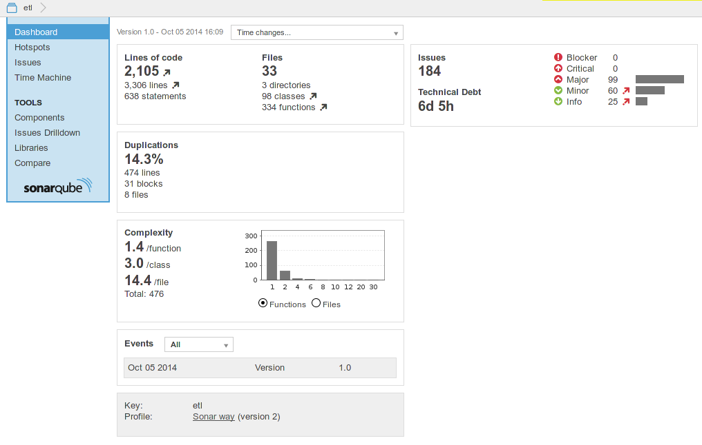
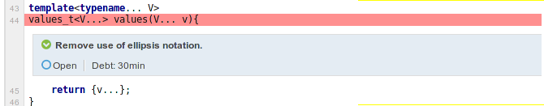

SonarQube inspections for C++ projects
Back in the days, when I used to develop in Java (I hadn't discovered the wonders of C++ :) ), I used Sonar a lot for my projects. Sonar is a great tool for quality inspections of a project. Sonar has been made for Java and is mostly free and opensource (some plugins are commercial) to inspect Java projects. Unfortunately, this is not the case for C++ inspection. Indeed, the C++ plugin cost 7000 euros (more than 8500$). As I mostly work on C++ for opensource and school projects, I'm definitely not able to buy it. I wanted for a long time to test the commercial C++ plugin. For this article, sonarsource provided me with a short (very short) time license for the C++ plugin.
There is also another option for C++ which is the C++ community plugin: https://github.com/wenns/sonar-cxx. I have tested it some time ago, but I was not satisfied with it, I had several errors and had to use a dev version to make it work a bit. Moreover, the C++11 support is inexistant and management of parsing error is not really satisfying. But maybe it is good for you. This article will only focus on the commercial plugin.
Usage
For each project that you want to analyze with Sonar, you have to create a sonar-project.properties files describing some basic information about your project.
Then, there are two ways to inspect a C++ project. The first one and recommended one is to use the build-wrapper executable. It is a sub project that you have to download and install alongside Sonar. It works by wrapping the commands to your build systems:
build-wrapper make all
and this should generate enough informations for not having to fill each field in the project configuration. The, you have to use the sonar-runner program to upload to Sonar.
I tried it on several projects and there seems to be a problem with the includes. It didn't include the header files in the Sonar inspections.
I finally ended up using manual configuration of the Sonar project and the header files were included correctly. However, you normally have to include many information in the configuration including all macros for instance. For now, I haven't bothered generating them and it doesn't seem to impact too much the results.
When I look in the log, it seems that there are still a lot of parsing errors. They seem mostly related to some compiler macro, especially the __has_feature__ macro of clang. This is the same problem with the build-wrapper. When I don't use the build-wrapper I also have other problems with macros for unit testing.
I also have other errors coming during the inspection, for instance:
error directive: This file requires compiler and library support for the ISO C++ 2011 standard. This support is currently experimental, and must be enabled with the -std=c++11 or -std=gnu++11 compiler options
I think it comes from the fact that I compile with std=c++1y and that Sonar does not support C++14.
Inspections
Here is the results of inspection on my ETL project:
I really like the web interface of Sonar, it really sums well all the information and the various plugins play quite nice with each other. Moreover, when you check issues, you can see directly the source code very clearly. I really think this is the strong point of Sonar.
Here is the Hotspots view for instance:
Or the Time Machine view:
The issues that are reported by Sonar are quite good. On this project there is a lot of them related to naming conventions because I don't follow the conventions configured by default. However, you can easily configure the inspections to give your own naming regex or simple enable/disable some inspections.
There are some good inspections:
- Some missing explicit keyword
- Some commented block of code that can be removed
- An if-elseif construct that should have had a else
- Files with too high complexity
However, there are also some important false positives. For instance:

In here, there are no reasons to output this issue since the operator is deleted. It proves that the C++11 support is rather incomplete. I have other false positives of the same kind for = default operators and constructors. Here is another example:
In this case, the varadic template support is mixed with the old ellipsis notation, making it again a lack of C++11 support. There are also other false positives for instance because of lambdas, but all of them were related to C++11.
Various
If you don't think you have enough quality rules, you can also include the one from cppcheck simply by givin the path to cppcheck in sonar-project.properties. I think this is great, since it works all by itself. You can also create your own rule, but you'll have to use XPath for path.
If you want, you can also include unit test reports inside Sonar. I haven't tested this support since they only support cppunit test reports and I use only Catch for my unit tests. It would have been great if JUnit format would have been supported since many tool support it.
The last option that is supported by this plugin is the support of GCOV reports for code coverage information. I haven't been able to make it work, I had errors indicating that the source files were not found. I didn't figure this out. It may come from the fact that I used llvm and clang to generate the GCOV reports and not G++.
Conclusion
First, here are some pros and cons for the C++ support in SonarQube.
Pros
- Good default inspections
- Great web interface.
- cppcheck very well integrated
- Issues are easily configurable
Cons
- C++11 support is incomplete and no C++14 support
- build-wrapper support seems instable. It should be integrated directly into sonar.
- Unit tests support is limited to cppunit
- Haven't been able to make Code Coverage work
- Macro support not flexible enough
- Too expensive
- Quite complicated
- No support for other static analyzer than cppcheck
The general web interface feeling is quite good, everything looks great and the report are really useful. However, the usage of the tool does not feel very professional. I had a lot more problems than I expected to use it. I was also really disappointed by the C++11. The syntax seems to be supported but not the language feature in the inspections, making the C++11 support completely useless. This is weird since they cite C+11 as supported. Moreover, there not yet any C++14 support, but this is less dramatic. It is also a bit sad that they limit the import to cppcheck and no other static analyzers and the same stands for cppunit.
In my opinion, it is really an inferior product compared to the Java support. I was expecting more from a 8500 dollars product.
For now, I won't probably use it anymore on my projects since all of them use at least C++11, but I will probably retry Sonar for C++ in the future hoping that it will become as the Sonar Java support.
Comments
Comments powered by Disqus